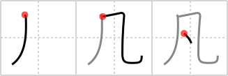

凡
← →
mediocre

Reading:
On-Yomi: ボン、ハン — Kun-Yomi: およ.そ、おうよ.そ、すべ.て
Heisig story:
While we refer to something insignificant as a "drop in the bucket," the kanji for mediocre suggests the image of a "drop in the wind."
Koohii stories:
1) [panikbuton] 20-1-2008(132): Is there anything as mediocre as a drop of piss in the wind?
2) [mukade] 10-7-2007(98): A drop of breeze is naught but a mediocre wind.
3) [talloberon] 20-4-2008(47): A drop of rain in the wind… what a mediocre rainy season…
4) [xiteru] 9-10-2007(27): Mediocre people hide under the table.
5) [ChrisSimons] 18-4-2006(14): All we are is Dust in the Wind- a great example of a mediocre song.